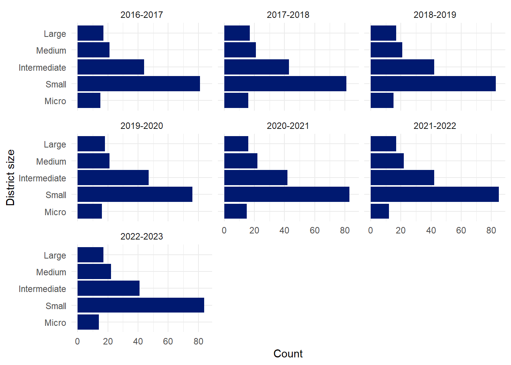
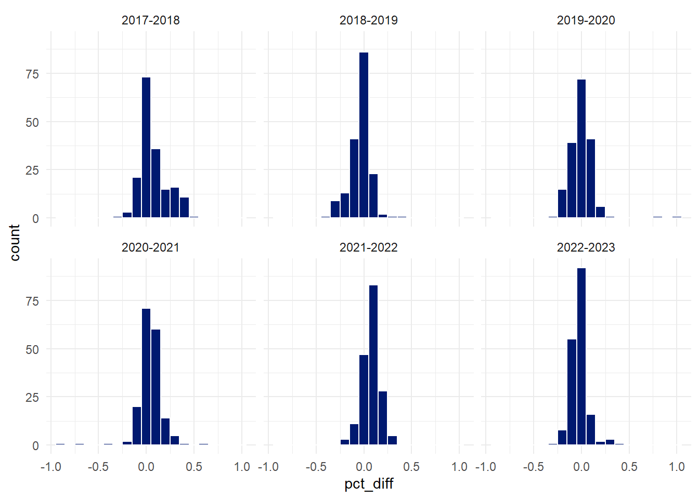

# run all the preprocessing code.
source("scripts/data-prep.R")Chronic Absenteeism in Colorado School Districts
School years 2016-2017 to 2022-2023
Overview
Rates of chronic absenteeism have been increasing in Colorado over the past several years. This analysis aims to identify broad trends, both spatially and temporally, in this phenomenon and to provide resources to those that are investigating and verifying methods to mitigate it.
Objectives
The objectives of this analysis are to:
- Understand how rates of chronic absenteeism change temporally and spatially from 2016 to 2023.
- Compare chronic absenteeism rates in different regions of Colorado
- Understand if COVID-19 appears to have had a significant effect on chronic absentee rates.
- Understand if school district size is correlated with chronic absentee rates.
Data from the Colorado Department of Education will be used to understand chronic absenteeism and its rate and location of occurrence.
Definitions
The Colorado Department of Education provides the following definition of chronic absenteeism:
- Chronically Absent: A student absent 10 percent or more of the days enrolled during the school year is chronically absent. All absences are included - unexcused and excused. The rate is the percentage of students enrolled who are chronically absent.
Resources
The following resources were produced for this analysis and are made publicly available:
Chronic Absenteeism in Colorado 2016-2023 Dashboard - A Tableau interactive dashboard that lets the user see both spatial and temporal changes to chronic absenteeism throughout the state.
Chronic Absenteeism Colorado - The github repository that contains all source materials and the code, written in the R programming language, used to produce this analysis.
Data Sources
The data sources used in this analysis come from the Colorado Department of Education. The department maintains a website containing information about attendance including information about chronic absenteeism.
The raw data for years 2016-2017 to 2021-2022 can be found at the Attendance - Previous School Years page or at the github repository listed in the Resources section above.
In addition to the absenteenism data, geometry files for creating maps are required for this analysis. The Colorado school district shape file was obtained from the Colorado Geospatial Portal and modified to meet the needs of this analysis. From more information on how the file was modified, see the shape file section below.
Notes on the methodology of data collection from the Department of Education:
- Distinct counts were taken for each level of data, i.e. distinct counts for the state, district and school level. Since distinct counts were taken, there is not necessarily a 1-1 ratio of summing up schools to equal a district count, or summing up district counts to equate state level.
- Total Days Attended + Total Days Excused + Total Days Unexcused = Total Days Possible for each student record. There is a 0.5 tolerance for this calculation.
- Chronic Absenteeism Rate adjusted from school year 2022-2023, forward, to not include PK students in denominator.
- Total Number of Chronic Absenteeism students and Total Number of Habitually Truant (for each category) adjusted from school year 2022-2023, forward, to not include duplicate counts, i.e. not count one student twice or more for meeting multiple criteria.
- School level data was collected up until the 2018-2019 school year with student level data collection beginning in 2019-2020.
Data prepartion
The file structure is not consistent across the individual year datasets. There are different numbers of fields, different names for the same fields, differing numbers of empty rows at the end of the datasets, and different file name conventions for the different datasets. The goal of the data preparation is to normalise all datasets so that they:
- Have the same naming convention for all input files
- Have the same structure
- Have the same naming convention for all fields
- Have field names that are easy to work with in code
- Fields are in the same column order within datasets
- Contain no extraneous records or fields
- Ensure that all datasets contain the same number of districts
For more details on the data preparation process, consult the preparation script, data-prep.R, found in the /scripts directory of the Chronic Absenteeism Colorado repository.
Standarising file names, fields, and naming conventions
The data for this analysis came in the form of Excel spreadsheets with varying name formats. The individual school year file names were standardised with the following format: startyear-endyear_ChronicAbsenteeism.xslx. For example, data for the 2016-2017 school year is contained in the file 2016-2017_ChronicAbsenteeism.xlsx.
In addition to discrepancies in file names, there were inconsistencies in the field names between years.
Dataset structure standardisation
While the individual datasets contain most of the same data, the structure of the data varies from year to year. The following structure has been imposed on all school year datasets so that they can be merging into a single, master dataset.
| Field name | Data type |
|---|---|
| school_year | ordinal factor |
| county_code | character |
| county_name | character |
| district_code | character |
| district_name | character |
| absentee_students | numeric |
| total_students | numeric |
| district_size | ordinal_factor |
| chronically_absent_rate | numeric |
| pct_diff | numeric |
Field names in bold are derived fields that are not in the original data. Details can be found in the Feature creation section below.
The truancy data was removed from the dataset since chronic absenteeism is the focus of this analysis. All fields were converted to “clean” names that facilitate working with them programmatically. This entails replacing spaces with underscores, converting all characters to lower case, and ensuring that fields do not start with a numeral.
The changes required for each year’s data are detailed in the following sections.
2016-2017
- Fields were renamed to match standard names.
- Truancy field was dropped.
- The
school_yearfield was missing.
2017-2018/2018-2019
- Fields were renamed to match standard names.
- Truancy fields were dropped.
2019-2020/2020-2021/2021-2022
- Fields were renamed to match standard names.
- Truancy fields were dropped.
2021_2022_student_countfield was renamed tototal_students.
2022-2023
- Fields were renamed to match standard names.
- Truancy fields were dropped.
k_12_student_count_used_in_chronic_absent_ratefield was renamed tototal_students.chronic_absent_countfield was renamed toabsentee_count.- Fields were reordered to conform to dataset structure standard.
The shape file
The shape file contains all of the geometries needed to successfully create the school districts in mapping software. The problem is that the school district names in the file do not always match the names in the absentee datasets. There are no other fields in the existing data to associate the district geometries with the absentee data. Such a relationship is essential for using the data to create dashboards in Tableau.
To solve this problem, the district_code field has manually added to the shape file to provide a simple way of creating the relationship between the district geometries and the absentee data. In most cases, associating the correct district code was not difficult, but the following 3 school districts required some additional research as the district names were considerably different in the shape file and absentee dataset.
School districts to repair
The following table contains the district name discrepancies.
| Absentee dataset district name | Shapefile district name |
|---|---|
| FREMONT RE-2 | Florence RE-2 School District |
| CUSTER COUNTY SCHOOL DISTRICT C-1 | Consolidated C-1 School District (Westcliffe) |
| Revere School District | Platte Valley RE-7 School District |
Data processing
Data processing involves investigating the data looking for:
- missing data
- inconsistent data
- typos and other errors in character data
- errors in numeric data
Once found, errors need to be corrected or otherwise acknowledged so that later analysis is not impacted.
Understanding missingness
It is important to understand what data is missing from each dataset. The R package naniar is used to identify records which have a least one field that is missing data.
2016-2017 school year
The only record with data missing in the 2016-2017 dataset is information for the Karval RE-23 school district. Fields with missing data are absentee_students, total_students, and chronically_absent_rate. This is the result of this district having been missing in the original data and being added to the dataset during data preparation. Rather than attempt to impute the missing data, it will be left missing.
naniar::miss_case_summary(df_2016) |>
filter(n_miss > 0) |>
inner_join(df_2016 |>
rowid_to_column("case"), by=c("case"))# A tibble: 1 × 11
case n_miss pct_miss school_year county_code county_name district_code
<int> <int> <dbl> <chr> <chr> <chr> <chr>
1 101 3 37.5 2016-2017 37 LINCOLN 1810
# ℹ 4 more variables: district_name <chr>, absentee_students <dbl>,
# total_students <dbl>, chronically_absent_rate <dbl>2017-2018 school year
There is no data missing from the 2017-2018 dataset.
naniar::miss_case_summary(df_2017) |>
filter(n_miss > 0) |>
inner_join(df_2017 |>
rowid_to_column("case"), by=c("case"))# A tibble: 0 × 11
# ℹ 11 variables: case <int>, n_miss <int>, pct_miss <dbl>, school_year <chr>,
# county_code <chr>, county_name <chr>, district_code <chr>,
# district_name <chr>, absentee_students <dbl>, total_students <dbl>,
# chronically_absent_rate <dbl>2018-2019 school year
The only record with data missing in the 2018-2019 dataset is information for the Cheraw 31 school district. Fields with missing data are absentee_students, total_students, and chronically_absent_rate. This is the result of this district having been missing in the original data and being added to the dataset during data preparation. Rather than attempt to impute the missing data, it will be left missing.
naniar::miss_case_summary(df_2018) |>
filter(n_miss > 0) |>
inner_join(df_2018 |>
rowid_to_column("case"), by=c("case"))# A tibble: 1 × 11
case n_miss pct_miss school_year county_code county_name district_code
<int> <int> <dbl> <chr> <chr> <chr> <chr>
1 124 3 37.5 2018-2019 45 OTERO 2560
# ℹ 4 more variables: district_name <chr>, absentee_students <dbl>,
# total_students <dbl>, chronically_absent_rate <dbl>2019-2020 school year
There is no data missing from the 2019-2020 dataset.
naniar::miss_case_summary(df_2019) |>
filter(n_miss > 0) |>
inner_join(df_2019 |>
rowid_to_column("case"), by=c("case"))# A tibble: 0 × 11
# ℹ 11 variables: case <int>, n_miss <int>, pct_miss <dbl>, school_year <chr>,
# county_code <chr>, county_name <chr>, district_code <chr>,
# district_name <chr>, absentee_students <dbl>, total_students <dbl>,
# chronically_absent_rate <dbl>2020-2021 school year
The only record with data missing in the 2020-2021 dataset is information for the Holly RE-3 school district. Fields with missing data are absentee_students, total_students, and chronically_absent_rate. This is the result of this district having been missing in the original data and being added to the dataset during data preparation. Rather than attempt to impute the missing data, it will be left missing.
naniar::miss_case_summary(df_2020) |>
filter(n_miss > 0) |>
inner_join(df_2020 |>
rowid_to_column("case"), by=c("case"))# A tibble: 1 × 11
case n_miss pct_miss school_year county_code county_name district_code
<int> <int> <dbl> <chr> <chr> <chr> <chr>
1 135 3 37.5 2020-2021 50 PROWERS 2670
# ℹ 4 more variables: district_name <chr>, absentee_students <dbl>,
# total_students <dbl>, chronically_absent_rate <dbl>2021-2022 school year
There is no data missing from the 2021-2022 dataset.
naniar::miss_case_summary(df_2021) |>
filter(n_miss > 0) |>
inner_join(df_2021 |>
rowid_to_column("case"), by=c("case"))# A tibble: 0 × 11
# ℹ 11 variables: case <int>, n_miss <int>, pct_miss <dbl>, school_year <chr>,
# county_code <chr>, county_name <chr>, district_code <chr>,
# district_name <chr>, absentee_students <dbl>, total_students <dbl>,
# chronically_absent_rate <dbl>2022-2023 school year
There is no data missing from the 2022-2023 dataset.
naniar::miss_case_summary(df_2022) |>
filter(n_miss > 0) |>
inner_join(df_2022 |>
rowid_to_column("case"), by=c("case"))# A tibble: 0 × 11
# ℹ 11 variables: case <int>, n_miss <int>, pct_miss <dbl>, school_year <chr>,
# county_code <chr>, county_name <chr>, district_code <chr>,
# district_name <chr>, absentee_students <dbl>, total_students <dbl>,
# chronically_absent_rate <dbl>Merging the datasets
To facilitate further analysis, the individual school year datasets will be merged into a single master dataset.
df_master <- bind_rows(df_2016,
df_2017,
df_2018,
df_2019,
df_2020,
df_2021,
df_2022)Examination of unvariates
There are 3 numeric fields that need to be reviewed: chronically_absent_rate, absentee_students, and total_students. All of these fields should have positive values. The first, chronically_absent_rate should range between 0 and 1. In addition to these numeric fields, the school_districts need to be examined to ensure that all datasets include the same 178 school districts. Additionally, each dataset should contain 178 observations for the same school year.
Verify counties
df_master |>
distinct(county_name)# A tibble: 63 × 1
county_name
<chr>
1 ADAMS
2 ALAMOSA
3 ARAPAHOE
4 ARCHULETA
5 BACA
6 BENT
7 BOULDER
8 CHAFFEE
9 CHEYENNE
10 CLEAR CREEK
# ℹ 53 more rowsThere are 63 counties present. This is good. There are 64 counties in the state, but Broomfield county is missing because it does not have any school districts of its own. It is served by existing districts.
The names are in call caps, for aesthetics, these will be converted to proper case.
df_master <- df_master |>
mutate(
county_name = str_to_title(county_name)
)
df_master |>
distinct(county_name)# A tibble: 63 × 1
county_name
<chr>
1 Adams
2 Alamosa
3 Arapahoe
4 Archuleta
5 Baca
6 Bent
7 Boulder
8 Chaffee
9 Cheyenne
10 Clear Creek
# ℹ 53 more rowsNow we need to verify the county codes.
df_master |>
distinct(county_code) |>
pull() [1] "01" "02" "03" "04" "05" "06" "07" "08" "09" "10" "11" "12" "13" "14" "15"
[16] "16" "17" "18" "19" "20" "21" "22" "23" "24" "25" "26" "27" "28" "29" "30"
[31] "31" "32" "33" "34" "35" "36" "37" "38" "39" "40" "41" "42" "43" "44" "45"
[46] "46" "47" "48" "49" "50" "51" "52" "53" "54" "55" "56" "57" "58" "59" "60"
[61] "61" "62" "63"There are 63 county codes. The data are consistent.
Verify school districts
Each dataset has 178 school district records. They should all be unique and identical between school years.
district_count <- df_master |>
distinct(district_code) |>
count() |>
pull()
district_count[1] 178This confirms that there are only 178 districts in the dataset.
district_name_count <- df_master |>
distinct(district_name) |>
count() |>
pull()
district_name_count[1] 361We have an issue with the district_name field, however. There are 361 distinct values rather 178. We need to investigate the field to see if it is possible to normalise the district_name field.
df_master |>
distinct(district_name)# A tibble: 361 × 1
district_name
<chr>
1 MAPLETON 1
2 ADAMS 12 FIVE STAR SCHOOLS
3 ADAMS COUNTY 14
4 SCHOOL DISTRICT 27J
5 BENNETT 29J
6 STRASBURG 31J
7 WESTMINSTER PUBLIC SCHOOLS
8 ALAMOSA RE-11J
9 SANGRE DE CRISTO RE-22J
10 ENGLEWOOD 1
# ℹ 351 more rowsAfter pouring through the data, it looks like the districts have both an all caps version and a proper case version.
distinct_districts <- df_master |>
mutate(
district_name = str_to_title(district_name)
) |>
distinct(district_name) |>
count() |>
pull()
distinct_districts[1] 187This gets us a lot closer. There are now only 187 distinct district_name values, but we still have 9 to normalise.
Since we know that there are only 178 distinct district_code values, we can group by the district_code and find all instances where the count() is greater than 1. There should be 9 such instances.
df_master |>
mutate(
district_name = str_to_title(district_name)
) |>
distinct(district_name, district_code) |>
group_by(district_code) |>
count() |>
filter(n > 1)# A tibble: 9 × 2
# Groups: district_code [9]
district_code n
<chr> <int>
1 0310 2
2 0470 2
3 0920 2
4 1110 2
5 2020 2
6 2710 2
7 2730 2
8 3100 2
9 3140 2These are the 9 districts. We can retrieve them to see what we need to do to normalise them. Before we do, we will make permanent the proper casing of the district names.
df_master <- df_master |>
mutate(
district_name = str_to_title(district_name)
)
dupe_district_ids <- df_master |>
mutate(
district_name = str_to_title(district_name)
) |>
distinct(district_name, district_code) |>
group_by(district_code) |>
count() |>
filter(n > 1) |>
select(district_code) |>
pull()
df_master |>
filter(district_code %in% dupe_district_ids) |>
select(district_code, district_name) |>
distinct() |>
arrange(district_code)# A tibble: 18 × 2
district_code district_name
<chr> <chr>
1 0310 Mc Clave Re-2
2 0310 Mcclave Re-2
3 0470 St Vrain Valley Re 1j
4 0470 St Vrain Valley Re1j
5 0920 Elizabeth C-1
6 0920 Elizabeth School District
7 1110 Falcon 49
8 1110 District 49
9 2020 Moffat County Re:No 1
10 2020 Moffat County Re: No 1
11 2710 Meeker Re1
12 2710 Meeker Re-1
13 2730 Del Norte C-7
14 2730 Upper Rio Grande School District C-7
15 3100 Windsor Re-4
16 3100 Weld Re-4
17 3140 Weld County S/D Re-8
18 3140 Weld Re-8 Schools Most of these issues are minor differences that are easily fixed. The only significant differences are with district codes 0920, 1110, 2730, and 3100. These records will need to be modified individually as there are no patterns to the discrepancies. When the issue is that there are different names in use, the one being used more recently will be adopted.
df_master <- df_master |>
mutate(
district_name = case_when(district_name %in% c("Mc Clave Re-2","Mcclave Re-2") ~ "McClave Re-2",
str_starts(district_name, "St Vrain Valley Re") ~ "St Vrain Valley Re-1j",
# district 0920 is called "Elizabeth School District" most recently
district_name == "Elizabeth C-1" ~ "Elizabeth School District",
# district 1110 is called "District 49" most recently
district_name == "Falcon 49" ~ "District 49",
str_starts(district_name, "Moffat County") ~ "Moffat County Re-1",
district_name == "Meeker Re1" ~ "Meeker Re-1",
# district 2730 is called "Upper Rio Grande School District C-7" most recently
district_name == "Del Norte C-7" ~ "Upper Rio Grande School District C-7",
district_name == "Windsor Re-4" ~ "Weld Re-4",
# district 3140 is called "Weld Re-8 Schools" most recently
district_name == "Weld County S/D Re-8" ~ "Weld Re-8 Schools",
TRUE ~ district_name)
)This confirms that the district_name field has been normalised. Now there are only 178 distinct values.
df_master |>
distinct(district_name) |>
count()# A tibble: 1 × 1
n
<int>
1 178Verify school year information
Each dataset should have a single value in the school_year field. If this is not the case, determine what the discrepancy is and make the correction.
df_master |>
group_by(school_year) |>
count()# A tibble: 7 × 2
# Groups: school_year [7]
school_year n
<chr> <int>
1 2016-2017 178
2 2017-2018 178
3 2018-2019 178
4 2019-2020 178
5 2020-2021 178
6 2021-2022 178
7 2022-2023 178The datasets all contain a single value for the school_year.
Now that this data is confirmed, the school_year field should be converted to an ordinal factor from a character field.
df_master <- df_master |>
mutate(
school_year = fct_relevel(school_year, "2016-2017", "2017-2018", "2018-2019",
"2019-2020","2020-2021","2021-2022","2022-2023")
)Chronic absenteeism rate
This field represents the proportion of K-12 students who are chronically absent. Values should range from 0 to 1 inclusive.
df_master |>
select(chronically_absent_rate) |>
head() |>
pull()[1] 0.273985680 0.226889195 0.368673647 0.351188322 0.007774538 0.149413020This field has way too many significant figures. Most of these are meaningless and later years in the dataset have fewer significant figures, so the additional significant figures will be removed by rounding.
df_master <- df_master |>
mutate(
chronically_absent_rate = round(chronically_absent_rate, 3)
)Plot histograms to look for unusual or invalid values.
df_master |>
ggplot(aes(x=chronically_absent_rate)) +
geom_histogram(binwidth = 0.05, colour="white", fill=standard_chart_colour) +
facet_wrap(~school_year) +
labs(
title = "Distribution of district chronic absenteeism",
subtitle = "School years 2016-2023",
x="Chronically absent rate",
y="Count"
)
The data look valid. There is a high occurrence of zero values in the 2016-2017 school year. This suggests that either different school districts may have begun record keeping at different times or that these smaller districts were actually not seeing this phenomenon until later. Of these, the former seems more plausible. Chronic absenteeism could be cross-referenced with truancy rates to provide a check on this. The truancy data may allow us to rule out the second hypothesis. This could be done in a follow-up analysis.
There are 20 districts that reported no chronically absent students in 2016-2017. The number steadily decreases and by 2021-2022 there are no districts reporting no students as chronically absent.
df_master |>
filter(chronically_absent_rate == 0) |>
ggplot(aes(x=total_students)) +
geom_histogram(bins=20, colour="white", fill=standard_chart_colour) +
facet_wrap(~school_year) +
labs(
title = "Smaller districts are less likely to report chronic absenteeism",
subtitle = "The number of schools not reporting declines significantly over time",
x="Total studends enrolled",
y="Count"
)
Total student enrollment
Based on a 5-number summary of the number of students enrolled in each district varies widely from less than 10 to more than 85,000.
df_master |>
group_by(school_year) |>
summarise(
min_count = min(total_students, na.rm = TRUE),
quartile_1 = quantile(total_students, 0.25, na.rm = TRUE),
median = median(total_students, na.rm = TRUE),
quartile_3 = quantile(total_students, 0.75, na.rm = TRUE),
max_count = max(total_students, na.rm = TRUE),
) |>
gt(id="total-enrollment-tukey") |>
format_table("5-number summary of undifferentiated enrollment data")| 5-number summary of undifferentiated enrollment data | |||||
| school_year | min_count | quartile_1 | median | quartile_3 | max_count |
|---|---|---|---|---|---|
| 2016-2017 | 5 | 212 | 596 | 2,339 | 86,139 |
| 2017-2018 | 4 | 210.5 | 584 | 2,325.5 | 86,863 |
| 2018-2019 | 37 | 209 | 598 | 2,299 | 86,887 |
| 2019-2020 | 16 | 227.2 | 658.5 | 2,475.2 | 96,030 |
| 2020-2021 | 44 | 219 | 622 | 2,193 | 93,385 |
| 2021-2022 | 32 | 225.5 | 619.5 | 2,369.8 | 92,170 |
| 2022-2023 | 31 | 222 | 599 | 2,322 | 87,225 |
The numbers are consistent and there are no obviously invalid values in the dataset. The minimum counts for the first two years look suspect. The district is the same in both cases, the Agate 300 school district.
df_master |>
filter(district_code == "0960") |>
select(school_year,absentee_students,total_students,chronically_absent_rate) |>
gt(id="agate-300-enrollment") |>
format_table("Agate 300 School District enrollment data 2016-2023")| Agate 300 School District enrollment data 2016-2023 | |||
| school_year | absentee_students | total_students | chronically_absent_rate |
|---|---|---|---|
| 2016-2017 | 0 | 5 | 0 |
| 2017-2018 | 0 | 4 | 0 |
| 2018-2019 | 0 | 47 | 0 |
| 2019-2020 | 4 | 34 | 0.1 |
| 2020-2021 | 16 | 73 | 0.2 |
| 2021-2022 | 22 | 95 | 0.2 |
| 2022-2023 | 12 | 78 | 0.2 |
The total_students data for Agate 300 school district is quite variable, but 5 and 4 seem like extremely low counts given the other 5 years of data available. It will not affect the outcome of this study, but a follow-up to determine the true values for the 2016-2017 and 2017-2018 school years would be useful.
To look for more school districts that might have large discrepancies in enrollment, year on year percent change in total enrollment can be computed and outliers investigated. After the field is created, a 5-number summary will give rough information about how the values are distributed.
df_master_tmp <- df_master |>
group_by(district_code) |>
arrange(school_year) |>
mutate(
pct_enroll_diff = 100*(total_students - lag(total_students))/lag(total_students)
) |>
ungroup()
df_master_tmp |>
filter(school_year != "2016-2017") |>
group_by(school_year) |>
summarise(
min_diff = min(pct_enroll_diff, na.rm = TRUE),
quartile_1 = quantile(pct_enroll_diff, 0.25, na.rm = TRUE),
median = median(pct_enroll_diff, na.rm = TRUE),
quartile_3 = quantile(pct_enroll_diff, 0.75, na.rm = TRUE),
max_diff = max(pct_enroll_diff, na.rm = TRUE),
) |>
gt(id="colorado-pct-diff-enrollment-tukey5") |>
format_table("% change in enrollment 5-number summary by school year")| % change in enrollment 5-number summary by school year | |||||
| school_year | min_diff | quartile_1 | median | quartile_3 | max_diff |
|---|---|---|---|---|---|
| 2017-2018 | −24.1 | −2.4 | 0.1 | 2.2 | 47.1 |
| 2018-2019 | −16.9 | −2.1 | 0.2 | 2.5 | 1,075 |
| 2019-2020 | −90.4 | 4.7 | 9.6 | 14.7 | 75.6 |
| 2020-2021 | −81 | −8.9 | −3.9 | 0 | 868.8 |
| 2021-2022 | −66.3 | −3.4 | 1.5 | 7.2 | 395.5 |
| 2022-2023 | −46.6 | −9 | −4.3 | −0.2 | 217.8 |
This table shows that there are some very significant changes in district enrollments.
df_master_tmp |>
filter(school_year != "2016-2017" & abs(pct_enroll_diff) > 50) |>
select(school_year, district_code, district_name, absentee_students, total_students, pct_enroll_diff) |>
arrange(desc(abs(pct_enroll_diff))) |>
gt(id="colorado-pct-diff-enrollment") |>
format_table("Percent change of enrollment outliers 2016-2023",
"Outliers are defined as having a change in enrollment greater than 50%")| Percent change of enrollment outliers 2016-2023 | |||||
| Outliers are defined as having a change in enrollment greater than 50% | |||||
| school_year | district_code | district_name | absentee_students | total_students | pct_enroll_diff |
|---|---|---|---|---|---|
| 2018-2019 | 0960 | Agate 300 | 0 | 47 | 1,075 |
| 2020-2021 | 1410 | North Park R-1 | 35 | 155 | 868.8 |
| 2021-2022 | 0100 | Alamosa Re-11j | 685 | 2,294 | 395.5 |
| 2020-2021 | 0230 | Walsh Re-1 | 31 | 160 | 255.6 |
| 2022-2023 | 1440 | Plainview Re-2 | 6 | 410 | 217.8 |
| 2020-2021 | 0260 | Vilas Re-5 | 6 | 200 | 177.8 |
| 2022-2023 | 0310 | McClave Re-2 | 42 | 236 | 168.2 |
| 2021-2022 | 1440 | Plainview Re-2 | 12 | 129 | 158 |
| 2021-2022 | 0940 | Big Sandy 100j | 56 | 354 | 139.2 |
| 2020-2021 | 3220 | Idalia Rj-3 | 21 | 185 | 134.2 |
| 2020-2021 | 0960 | Agate 300 | 16 | 73 | 114.7 |
| 2021-2022 | 0740 | Sierra Grande R-30 | 87 | 286 | 110.3 |
| 2020-2021 | 1590 | Primero Reorganized 2 | 29 | 223 | 106.5 |
| 2021-2022 | 0580 | South Conejos Re-10 | 32 | 155 | 98.7 |
| 2019-2020 | 1410 | North Park R-1 | 2 | 16 | −90.4 |
| 2021-2022 | 3110 | Johnstown-Milliken Re-5j | 947 | 3,906 | 83.5 |
| 2020-2021 | 0100 | Alamosa Re-11j | 127 | 463 | −81 |
| 2021-2022 | 2862 | Julesburg Re-1 | 328 | 742 | 80.5 |
| 2019-2020 | 0260 | Vilas Re-5 | 12 | 72 | 75.6 |
| 2020-2021 | 0190 | Byers 32j | 2,115 | 7,027 | 73.5 |
| 2019-2020 | 0230 | Walsh Re-1 | 3 | 45 | −69.8 |
| 2021-2022 | 0290 | Las Animas Re-1 | 350 | 859 | −66.3 |
| 2022-2023 | 1580 | Trinidad 1 | 238 | 856 | 64.6 |
| 2021-2022 | 0310 | McClave Re-2 | 13 | 88 | −59.8 |
| 2019-2020 | 3220 | Idalia Rj-3 | 79 | 79 | −57.8 |
| 2020-2021 | 1440 | Plainview Re-2 | 10 | 50 | 56.2 |
| 2019-2020 | 2862 | Julesburg Re-1 | 167 | 802 | 55.4 |
| 2019-2020 | 0170 | Deer Trail 26j | 61 | 283 | 53.8 |
| 2020-2021 | 0580 | South Conejos Re-10 | 11 | 78 | −51.2 |
Without knowing the history if these districts it is hard to say if the numbers contain errors. Like Agate 300, mentioned earlier, there are some very large changes year on year in micro to intermediate sized districts. Some of this may be explained by small districts be subject to more size volatility than larger ones, but some of these districts are having order of magnitude size changes in total enrollment which seems likely to be a data entry error than a real fluctuation in student enrollment.
Examples of districts with at least 1 suspicious total_students record
- 0960 - Agate 300
- 0230 - Walsh RE-1
- 1410 - North Park R-1
- 0100 - Alamosa Re-11j
- 0580 - South Conejos Re-10 (?)
The first two years for Agate show enrollments of 5 & 4 students, then enrollment jumps to 37. It is likely that the 5 and 4 should be 35 and 34, but without checking, it is hard to say what the correct values are.
For Walsh RE-1, there is a clear typo in the 2019-2020 information. The listed value is 45 but this should probably be 145 based on the other years.
The same situation exists for North Park R-1 and in the same year. The listed value is 16, but it should probably be 160 or similar based on data from the other school years.
Alamosa RE-11j has a similar issue in the 2020-2021 school year where, most likely, a leading “2” was dropped from the total enrollment number. It should probably be 2463 rather than the 463 that is listed.
There is a less clear case for the South Conejos Re-10 school district in 2021-2022. The total enrollment drops from 160 to 78 before rebounding to 155. It is possible that there is a leading “1” that is missing, but so many districts show a drop in this year, that it is possible that the data are accurate.
Chronically absent student counts
The number of chronically absent students in each district varies widely from 0 to more than 40,000. The numbers are consistent and there are no invalid values in the dataset.
df_master |>
group_by(school_year) |>
summarise(
min_count = min(absentee_students, na.rm = TRUE),
quartile_1 = quantile(absentee_students, 0.25, na.rm = TRUE),
median = median(absentee_students, na.rm = TRUE),
quartile_3 = quantile(absentee_students, 0.75, na.rm = TRUE),
max_count = max(absentee_students, na.rm = TRUE),
)# A tibble: 7 × 6
school_year min_count quartile_1 median quartile_3 max_count
<fct> <dbl> <dbl> <dbl> <dbl> <dbl>
1 2016-2017 0 6 49 290 30483
2 2017-2018 0 33 144. 526. 31469
3 2018-2019 0 37 106 428 34596
4 2019-2020 0 26.2 90.5 506 27873
5 2020-2021 0 32 134 554 27870
6 2021-2022 4 67 173 782. 39781
7 2022-2023 1 61.5 170. 681 35835df_master |>
filter(!is.na(absentee_students)) |>
ggplot(aes(x=absentee_students)) +
geom_histogram(colour="white", fill=standard_chart_colour) +
facet_wrap(~school_year) +
labs(
title = "Distribution of district chronic absenteeism",
x="Absentee students",
y="Count"
)
Feature creation
Three new features will be made from the current data: district_size, pct_diff, and pct_enrollment_diff. The first feature is a ordered categorical variable that describes the size of the district. There are five levels. From smallest to largest they are
- Micro - Up to 100 students
- Small - 101 to 750 students
- Intermediate - 751 to 3000 students
- Medium - 3001 to 15000 students
- Large - More than 15000 students
The second feature is the change in chronic absenteeism rate from year to year. The values for all districts in the 2016-2017 school year are NA as this is the first year in the dataset.
df_master <- df_master |>
mutate(
district_size = case_when(
total_students > 15000 ~ "Large",
total_students > 3000 ~ "Medium",
total_students > 750 ~ "Intermediate",
total_students > 100 ~ "Small",
TRUE ~ "Micro"
)
) |>
mutate(
district_size = fct_relevel(district_size, "Micro", "Small", "Intermediate", "Medium", "Large")
) |>
group_by(district_code) |>
arrange(school_year) |>
mutate(
pct_diff = chronically_absent_rate - lag(chronically_absent_rate, n=1, order_by = district_code)
) |>
ungroup(district_code) |>
relocate(district_size, .before=chronically_absent_rate)The number of districts in each group is consistent from year to year. The smaller school districts, those in the Small and Micro categories, have the most variability. This is not surprising as small changes in student population can move a district from one category to another.
df_master |>
ggplot(aes(x=district_size)) +
geom_bar(fill=standard_chart_colour) +
facet_wrap(~school_year) +
coord_flip() +
labs(
x="District size",
y="Count"
)
The pct_diff data looks to be consistent with what we know about the rest of the data in this dataset. The 5 number summary shows how volatile the absenteeism rates can be, particularly around the first COVID-19 school year 2019-2020.
df_master |>
filter(school_year != "2016-2017") |>
group_by(school_year) |>
summarise(
min_count = min(pct_diff, na.rm = TRUE),
quartile_1 = quantile(pct_diff, 0.25, na.rm = TRUE),
median = median(pct_diff, na.rm = TRUE),
quartile_3 = quantile(pct_diff, 0.75, na.rm = TRUE),
max_count = max(pct_diff, na.rm = TRUE),
)# A tibble: 6 × 6
school_year min_count quartile_1 median quartile_3 max_count
<fct> <dbl> <dbl> <dbl> <dbl> <dbl>
1 2017-2018 -0.255 -0.00600 0.0250 0.147 0.478
2 2018-2019 -0.361 -0.074 -0.00200 0.0240 0.394
3 2019-2020 -0.27 -0.074 -0.00100 0.061 1
4 2020-2021 -0.886 -0.00900 0.0420 0.095 0.62
5 2021-2022 -0.229 0.0210 0.084 0.131 0.332
6 2022-2023 -0.251 -0.0678 -0.0245 0.0100 0.406The histograms show that the pct_diff data is normally distributed but with significant outliers in the 2019-2020 and 2020-2021 school years.
df_master |>
filter(!is.na(pct_diff)) |>
ggplot(aes(x=pct_diff)) +
geom_histogram(binwidth=0.1, colour="white", fill=standard_chart_colour) +
facet_wrap(~school_year)
Create master data file
Now that the data preparation and processing have been completed, the complete dataset can be saved to disk.
write_csv(df_master, file = "output/2016-2023-master_chronic_absenteeism.csv")Write CSV files to output folder for each year’s dataset so that they can be reused without having to reapply the processing steps.
write_csv(df_2016, file="output/2016-2017_chronic_absenteeism.csv")
write_csv(df_2017, file="output/2017-2018_chronic_absenteeism.csv")
write_csv(df_2018, file="output/2018-2019_chronic_absenteeism.csv")
write_csv(df_2019, file="output/2019-2020_chronic_absenteeism.csv")
write_csv(df_2020, file="output/2020-2021_chronic_absenteeism.csv")
write_csv(df_2021, file="output/2021-2022_chronic_absenteeism.csv")
write_csv(df_2022, file="output/2022-2023_chronic_absenteeism.csv")Analysis
The purpose of this analysis is to understand how chronic absenteeism is changing in Colorado both spatially and temporally.
Flesh this intro out a bit more, it needs something more.
Absentee trends for Colorado school districts
To begin, we create a line chart showing how the average chronic absenteeism changes for each district_size from 2016 - 2023. These are weighted averages that take into account the varying sizes of the individual school districts.
df_master |>
group_by(district_size, school_year) |>
summarise(
avg_rate = sum(absentee_students, na.rm = TRUE)/sum(total_students, na.rm = TRUE)
) |>
ggplot(aes(x=school_year, y=avg_rate*100, group=district_size)) +
geom_line(aes(colour=district_size), linewidth=1) +
scale_colour_manual(values = district_size_palette)+
labs(
x=element_blank(),
y="Percent Absentee",
title="Absenteeism is increasing over time",
fill="District size"
)
From this plot, we can see that, over all rates chronic absenteeism have increased for all district sizes from 2016 to 2023. There is a peak in the 2021-2022 school year, but it is too early to tell if the upward trend will continue or if 2021-2022 represents the high water mark. In addition to the overall trend, it is clear that larger districts tend to have higher rates of chronic absenteeism than smaller districts. The volatility of rate the smallest districts can be in the three school years from 2019-2022.
Spatial variations in chronic absenteeism
These maps show the change rates of chronic absenteeism spatially over time. The overall trend is that chronic absenteeism is increasingly a problem statewide, but local changes vary widely. The lowest rates of chronic absenteeism tend to be in the eastern part of the state, which is an ares dominated by smaller districts. The highest rates tend to be in the southern and southwestern Colorado. The main urban centres also show high rates of chronic absenteeism.
districts_shp <- read_sf("shapes/School_Districts.geojson")
districts_shp |>
inner_join(df_master, by="district_code") |>
ggplot() +
geom_sf(aes(fill=chronically_absent_rate)) +
facet_wrap(~school_year, ncol = 2) +
scale_fill_gradient(low="#f1e2ca", high="#b25d5a") +
labs(
fill="Chronically absent rate",
title = "Chronic absentee rate by district, 2016-2023",
subtitle = "Grey indicates missing data"
) +
theme(
plot.title.position = "plot",
legend.position = "bottom",
legend.key.height = unit(1, 'cm'), #change legend key height
legend.key.width = unit(1, 'cm'), #change legend key width
legend.title = element_text(size = 16),
legend.text = element_text(size = 14),
axis.text.x = element_blank(),
axis.text.y = element_blank(),
strip.text.x = element_text(size = 16),
plot.title = element_text(size = 20),
plot.subtitle = element_text(size = 16)
)
The changing rates of absenteeism show a trend of generally increasing rates peaking in the 2021-2022 school year. There is not yet enough data to know if this represents a peak in rates of absenteeism or if they will continue to climb.
Spatial variations in the change of chronic absenteeism rates
districts_shp |>
inner_join(df_master, by="district_code") |>
filter(school_year != "2016-2017") |>
ggplot() +
geom_sf(aes(fill=pct_diff)) +
facet_wrap(~school_year, ncol = 2) +
scale_fill_gradient2(low="#557ca2", high="#b25e5a", mid="white", midpoint = 0) +
labs(
fill="% change",
title = "Percent change in chronic absentee rate by district, 2017-2023",
subtitle = "Grey indicates missing data"
) +
theme(
plot.title.position = "plot",
legend.position = "bottom",
legend.key.height = unit(1, 'cm'), #change legend key height
legend.key.width = unit(1, 'cm'), #change legend key width
legend.title = element_text(size = 16),
legend.text = element_text(size = 14),
axis.text.x = element_blank(),
axis.text.y = element_blank(),
strip.text.x = element_text(size = 16),
plot.title = element_text(size = 20),
plot.subtitle = element_text(size = 16)
)
total_enrollment_year <- df_master |>
group_by(school_year) |>
summarise(
total_enrollment = sum(total_students, na.rm = TRUE)
)
total_enrollment_year |>
pivot_wider(names_from = "school_year", values_from = "total_enrollment") |>
gt(id="co-total-enrollment") |>
tab_header(
title = "Colorado total enrollment 2016-2023"
) |>
fmt_number(drop_trailing_zeros = TRUE) |>
opt_css(
css = "
#co-total-enrollment .gt_table {
width: 100%;
}
"
)| Colorado total enrollment 2016-2023 | ||||||
| 2016-2017 | 2017-2018 | 2018-2019 | 2019-2020 | 2020-2021 | 2021-2022 | 2022-2023 |
|---|---|---|---|---|---|---|
| 853,041 | 856,523 | 855,947 | 919,375 | 875,760 | 890,005 | 860,059 |
As the following plot shows, Colorado student enrollments are volatile in the 2019-2022 school years. The number of students enrolled fluctuates during the time that chronic absentee rates are peaking.
total_enrollment_year |>
mutate(
pct_change = 100*(total_enrollment - lag(total_enrollment))/lag(total_enrollment),
pos = if_else(pct_change>0, TRUE, FALSE)
) |>
filter(school_year != "2016-2017") |>
ggplot(aes(x=school_year, y=pct_change, fill=pos)) +
geom_col(position = "identity") +
scale_fill_manual(values = c("#D6604D", "#92C5DE"), guide = "none") +
labs(
x="School year",
y="% change",
title="Percent change in total enrollment for Colorado",
subtitle="2017-2023"
)
df_master |>
group_by(district_size, school_year) |>
summarise(
student_enrollment = sum(total_students, na.rm = TRUE)
) |>
inner_join(total_enrollment_year, by= "school_year") |>
mutate(
pct_of_total = round(student_enrollment/total_enrollment,3)*100
) |>
ggplot(aes(x=fct_rev(school_year),y=pct_of_total,group=district_size, fill=district_size)) +
geom_col() +
coord_flip() +
scale_fill_manual(values=district_size_palette) +
labs(
x="School year",
y="% of total",
title="District size percentage of total enrollment",
subtitle="2016-2023",
fill="District size"
) +
theme(
legend.position = "bottom"
)
Key findings
- Chronic absenteeism is increasing between 2016 and 2023 with a noticeable increase in the rate of absenteeism during the COVID-19 pandemic.
- Rates of absenteeism appear to be declining, but it is too early to establish a trend.
- The pandemic appears to have caused a migration of students into and then out of larger school districts. This flux of students may have contributed to increased rates of absenteeism during this time.
- Smaller districts generally have rate rates of absenteeism than larger ones.
- About 7 in 10 Colorado students are enrolled in large school districts. Given that these districts also have higher rates of absenteeism, State efforts to address the problem should focus on these districts